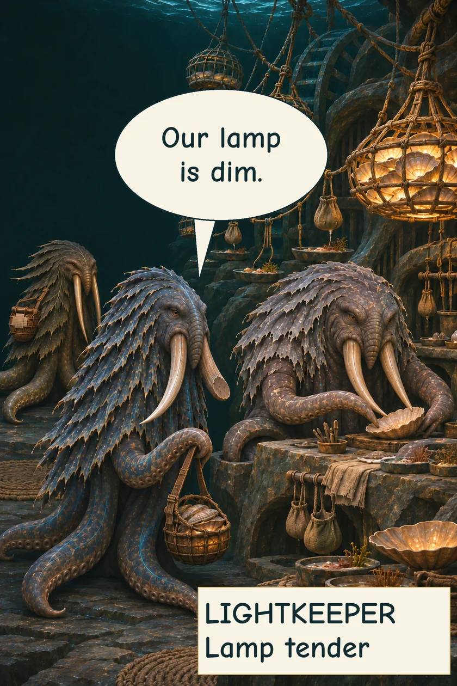
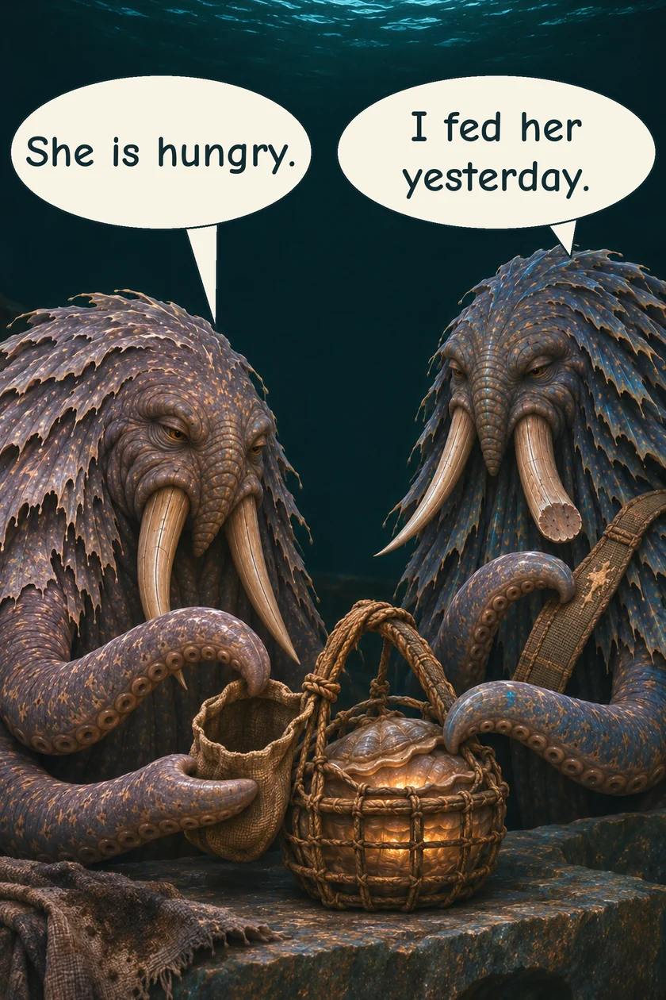
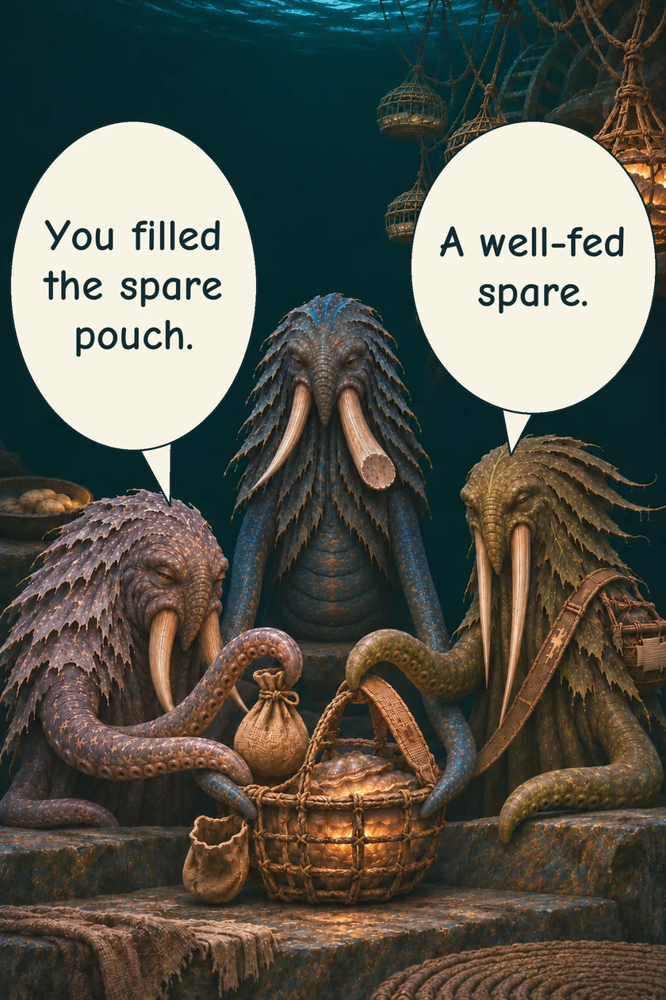
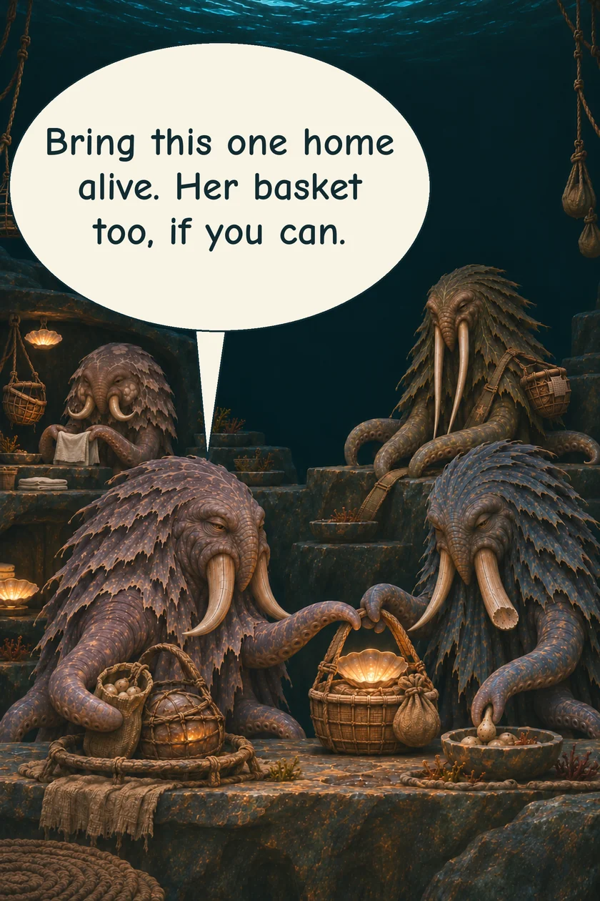

THE ORUUN · TEN YEARS BEFORE HUMANITY AWAKENS
The Lamp That Was Hungry
Beneath the ice, even a lamp needs its supper.
VARO · Road guideKELL · TraderLIGHTKEEPER · Lamp tender




They take the lamp home alive. This time, the food goes into the right pouch.
Read the words
Our lamp is dim.
She is hungry.
I fed her yesterday.
You filled the spare pouch.
A well-fed spare.
Bring this one home alive. Her basket too, if you can.